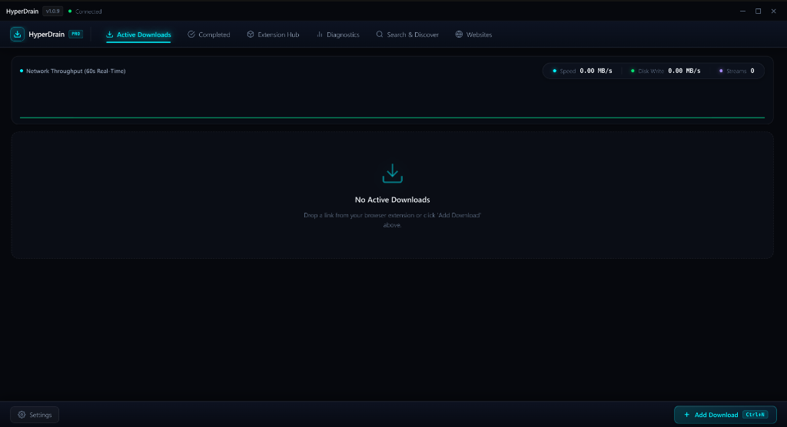

Fast downloads on slow links
Thirty-two parallel streams keep multi-gigabyte transfers moving when connections drop.
HyperDrain-1.1.0.AppImage (145.9 MB) downloads from GitHub CDN. Extension Hub then handles 32-stream capture.

Why single streams stall
Browsers rely on one socket. HyperDrain writes thirty-two ranges directly to disk.
- Single TCP stream throttles on congested routes
- Parts copied and merged after completion
- Silent stalls on brief Wi-Fi dropouts
- Expiring headers force HTTP 403 restarts
- 32 concurrent WriteAt streams
- Instant fallocate reservation, zero merge
- 10 s watchdog with SQLite WAL resume
- Manifest V3 cookie and header relay
Four views inside one window
Select a workspace to inspect the live interface.
Track network speed, disk write rate, and worker streams on a 60-second graph.
Connect Chrome, Brave, Edge, or Firefox in one click or export the extension archive.
Filter catalogs by category, genre, year, and rating without leaving the app.
Open web pages in an isolated browser with automatic HLS and MP4 detection.


Active Downloads console with 60-second throughput and disk telemetry.
Installers and release log
Auto-synced from GitHub Releases on load.
- Systems
- Ubuntu, Debian, Linux x64
- Engine
- Go HTTP/2 with fallocate
- Storage
- SQLite WAL, zero telemetry
- Wake
- hyperdrain://wake
curl -fsSL https://github.com/darkangle4022211-cpu/hyperdrain/releases/download/v1.1.0/HyperDrain-1.1.0.AppImage -o ~/HyperDrain.AppImage && chmod +x ~/HyperDrain.AppImage && ~/HyperDrain.AppImage- Built-in protected Websites browser and app launcher
- Integrated Extension Hub and batch ZIP capture
- Download-only mode and live proxy bypass sync
| Version | Published | Package | Notes |
|---|---|---|---|
| v1.1.0 | Nov 20, 2026 | HyperDrain-1.1.0.AppImage (145.9 MB) | Release |
| v1.0.9 | Oct 23, 2026 | hyperdrain_1.0.9_amd64.deb (126.8 MB) | Release |
| v1.0.8 | Oct 20, 2026 | hyperdrain_1.0.8_amd64.deb (126.8 MB) | Release |
| v1.0.7 | Oct 16, 2026 | hyperdrain_1.0.7_amd64.deb (154.6 MB) | Release |
| v1.0.6 | Oct 14, 2026 | hyperdrain_1.0.6_amd64.deb (154.6 MB) | Release |
Leave a review
Tried HyperDrain? Share speed or setup feedback below.
Published reviews
Loading reviewsChecking GitHub for published reviews…
Ready for faster transfers
Install the latest Linux build and connect your browser in one click.